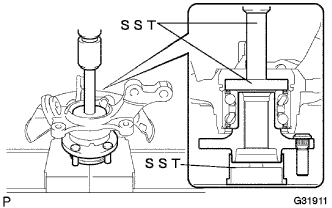

フロントアクスル ハブ LH 組み付け |
| 1. フロントアクスル ハブ ベアリング LH取り付け |
SSTおよびプレスを使用して、新品のハブベアリングをステアリングナックル端面まで圧入する。
| 2. ディスクブレーキダスト カバー FR LH取り付け |
ボルト3本でダストカバーを取り付ける。
| 3. フロントアクスル ハブ LH取り付け |
|  |
SSTおよびプレスを使用して、アクスルハブをステアリングナックルに圧入する。
| 4. フロントアクスル ハブ ホールスナップリング LH取り付け |
SSTを使用して、新品のホールスナップリングを取り付ける。